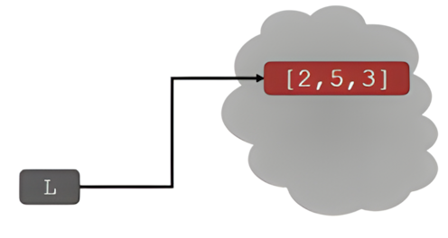
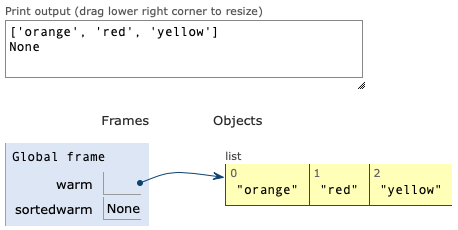
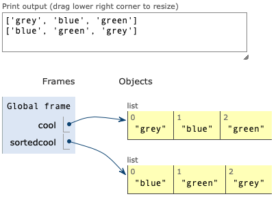
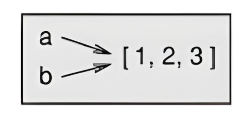
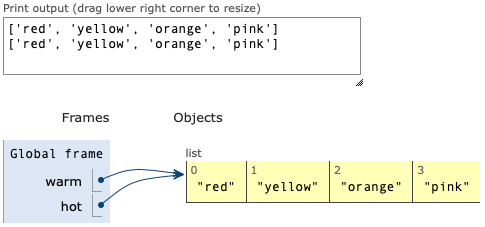
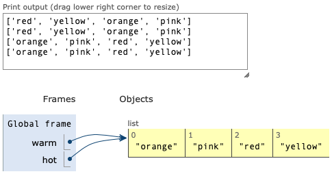
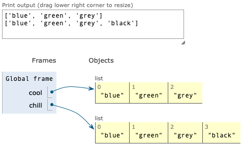
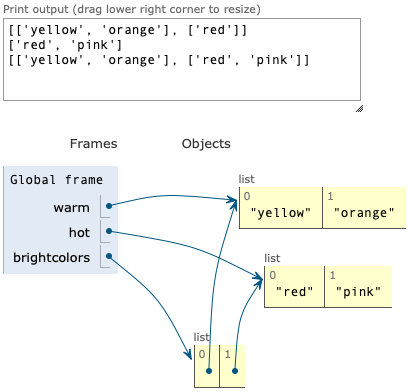

Lists#
Introduction to computer programming
Management and Artificial Intelligence
A List is a Sequence of Items#
In Python, lists:
are ordered sequences of items that can be accessed via index (remember: Python is 0-based!)
are denoted by square brackets, i.e.
[]
A list contains elements, that can either be:
homogeneous (e.g., all integers, all strings, …)
heterogeneous (less common)
Conversely to strings, lists are mutable:
elements can be changed
Indices and Ordering#
a_list = [] # an empty list
L = [2, 'a', 4, [1, 2]] # an heterogeneous list
print(f'len(L) = {len(L)}')
print(f'L[0] = {L[0]}')
print(f'L[2] + 1 = {L[2] + 1}')
print(f'L[3] = {L[3]}') # another list
len(L) = 4
L[0] = 2
L[2] + 1 = 5
L[3] = [1, 2]
0 to len(L)-1.range(len(L)) to get the valid indices of a list L.print(L[4])
---------------------------------------------------------------------------
IndexError Traceback (most recent call last)
Cell In[2], line 1
----> 1 print(L[4])
IndexError: list index out of range
i = 2
print(f'L[i-1] = {L[i-1]}')
L[i-1] = a
print(f'L[1:3] = {L[1:3]}')
L[1:3] = ['a', 4]
Mutability#
The assignment of an element at a given index changes the value!
L = [2, 1, 3]
print(f'Original L: {L}')
L[1] = 5
print(f'Modified L: {L}')
Original L: [2, 1, 3]
Modified L: [2, 5, 3]
L.
Iterating#
Common strategies:
Iterate over the elements of the list:
Simpler: no need to mess with indices
We can only read the elements but we cannot update them
Iterate over the indices of the list:
Slightly harder: we need to use the indices
We can both read and update the elements.
Example: compute the sum of elements of a list#
Approach #1: Iterate by element
L = [2, 5, 3]
total = 0
for e in L: # Extract each element of the list
total += e
print(f'Sum: {total}')
Sum: 10
Approach #2: Iterate by index
L = [2, 5, 3]
total = 0
for i in range(len(L)): # Using range(len(L)) to get valid indexes
total += L[i] # extract element at index i
print(f'Sum: {total}')
Sum: 10
Updating elements while iterating#
Suppose we want to increment by 1 each element of a list while iterating over it.
Approach #2: Iterate by index
L = [2, 5, 3]
for i in range(len(L)): # Using range(len(L)) to get valid indexes
L[i] += 1 # we update the original element through indexing
print(f'L: {L}') # OK: the list has been updated
L: [3, 6, 4]
Approach #1: Iterate by element
L = [2, 5, 3]
for e in L: # Extract each element of the list
e += 1 # We only get a copy of the element
print(f'L: {L}') # KO: the list was NOT updated!
L: [2, 5, 3]
Basic Operations#
append()#
Add elements to the end of a list L with:
L.append(<elements>)
L = [2, 1, 3]
print(f'Original L: {L}')
L.append(5) # lists are objects with data, methods and functions
print(f'L after append: {L}')
Original L: [2, 1, 3]
L after append: [2, 1, 3, 5]
append() mutates the list!+ vs. extend()#
Concatenate lists L1 and L2 together with:
L1.extend(L2)
or:
L1 + L2
L1 = [2, 1, 3]
L2 = [4, 5, 6]
L3 = L1 + L2
print(f'L1: {L1}')
print(f'L2: {L2}')
print(f'L3 = L1 + L2: {L3}')
L1.extend(L2)
print(f'L1 after extend: {L1}')
L1: [2, 1, 3]
L2: [4, 5, 6]
L3 = L1 + L2: [2, 1, 3, 4, 5, 6]
L1 after extend: [2, 1, 3, 4, 5, 6]
Similar but different…#
extend() mutates the list, whereas the + operator returns a new list.pop() vs. remove() vs. del()#
You can remove item(s) from a list using three different strategies:
del(): delete element at a specific indexiwithdel(L[i])pop(): delete element at a specific indexi(and return the removed element) withL.pop(i). If index is not provided,L.pop()deletes the last element of the list by default.remove(): remove a specific elementxwithL.remove(x).L.remove(x)looks for the elementxinLand, if found, removes itif
xoccurs multiple times, removes first occurrence onlyif
xis not found inL, throws an error
L = [2, 1, 3, 6, 3, 7, 0]
print(f'Original L: {L}')
L.remove(2)
print(f'After L.remove(2): {L}')
L.remove(3) # removes first occurrence
print(f'After L.remove(3): {L}')
del(L[1])
print(f'After del(L[1]): {L}')
a = L.pop()
print(f'After a = L.pop(): {L}')
print(f'a = {a}')
Original L: [2, 1, 3, 6, 3, 7, 0]
After L.remove(2): [1, 3, 6, 3, 7, 0]
After L.remove(3): [1, 6, 3, 7, 0]
After del(L[1]): [1, 3, 7, 0]
After a = L.pop(): [1, 3, 7]
a = 0
- when running
L.remove(3), only the first3is gone - when using
L.pop(), the assignment of the returned value is not mandatory
Example: write a function that removes duplicates from a list L1 that are present in L2.
def remove_dups_buggy(L1, L2):
for item in L1:
if item in L2:
L1.remove(item)
return L1
L1 = [1, 2, 3, 4]
L2 = [1, 2, 5, 6]
print(f'Result (buggy): {remove_dups_buggy(L1, L2)}')
Result (buggy): [2, 3, 4]
This is incorrect. Why?
Python uses an internal counter to keep track of the position in the loop
Mutation changes the length, but Python does not update the counter
The loop never visits element
2inL1
The correct way:
def remove_dups_correct(L1, L2):
L1copy = L1[:]
for item in L1copy:
if item in L2:
L1.remove(item)
return L1
L1 = [1, 2, 3, 4]
L2 = [1, 2, 5, 6]
print(f'Result (correct): {remove_dups_correct(L1, L2)}')
Result (correct): [3, 4]
Strings & Lists#
Convert a string
sto a listLusingL = list(s)this yields a list where each element is a character from
s
s = "I <3 Python"
L = list(s)
print(f'list(s): {L}')
list(s): ['I', ' ', '<', '3', ' ', 'P', 'y', 't', 'h', 'o', 'n']
Split a string
son a character parameter* usings.split()(splits on whitespace if called with no parameters)this yields a list where each element is a portion of
s
L_split = s.split()
print(f's.split(): {L_split}')
s.split(): ['I', '<3', 'Python']
L_split_custom = s.split('<')
print(f"s.split('<'): {L_split_custom}")
s.split('<'): ['I ', '3 Python']
* Splits on whitespace if called with no parameters
Merge a list of characters/strings
Lusing''.join(L)this yields a string which sees the concatenation of items in
Lwith a given character** in-between (you can specify a character between quotes to add between every element)
L_join = ['Hello', 'World']
s_join = ''.join(L_join)
print(f"''.join(['Hello', 'World']): {s_join}")
''.join(['Hello', 'World']): HelloWorld
s_join_custom = '_'.join(L_join)
print(f"'_'.join(['Hello', 'World']): {s_join_custom}")
'_'.join(['Hello', 'World']): Hello_World
** You can specify a character (between quotes) to add between every element
Other Operations#
Python has a set of built-in methods that you can use on lists.
You can find the full list at https://docs.python.org/3/tutorial/datastructures.html
Some list methods return new values. All main list methods mutate the list in-place.
Let’s go through the most popular ones, shall we?
sort elements in a list:
sort()andsorted()flip elements last-to-first in a list:
reverse()
L = [9, 6, 0, 3]
print(f'Original L: {L}')
Original L: [9, 6, 0, 3]
L1 = sorted(L) # returns sorted list in L1, does not change L
print(f'L after sorted(L): {L}')
print(f'L1: {L1}')
L after sorted(L): [9, 6, 0, 3]
L1: [0, 3, 6, 9]
L.sort() # L is now mutated (sorted)
print(f'L after L.sort(): {L}')
L after L.sort(): [0, 3, 6, 9]
L.reverse() # L is now mutated (flipped)
print(f'L after L.reverse(): {L}')
L after L.reverse(): [9, 6, 3, 0]
To mutate or not to mutate, that is the question.#
calling
sort()mutates the list, returns nothing (None)calling
sorted()does not mutate the list, must assign to a new variable
|
|
|
warm = ['red', 'yellow', 'orange']
sortedwarm = warm.sort()
print(f'warm: {warm}')
print(f'sortedwarm: {sortedwarm}')
|
cool = ['gray', 'blue', 'green']
sortedcool = sorted(cool)
print(f'warm: {cool}')
print(f'sortedwarm: {sortedcool}')
|
|
 |
 |
Aliasing#
Aliasing: if a refers to an object and you assign b = a, then both variables refer to the same object.

a = [1, 2, 3]
b = a
print(f'b is a: {b is a}')
b is a: True
Reference: association of a variable with an object (in the example above, two references to the same object)
Aliased: an object with more than one reference has more than one name, so we say that the object is aliased.
If the aliased object is mutable (like lists), changes made to one alias affect the other:
a = [1, 2, 3]
b = a
b[0] = 42
print(f'b: {b}')
print(f'a: {a}')
b: [42, 2, 3]
a: [42, 2, 3]
The aliasing side-effect also holds for list methods we saw earlier:
warm = ['red', 'yellow', 'orange']
hot = warm # we have an alias here
hot.append('pink')
print(f'hot: {hot}')
print(f'warm: {warm}') # breakpoint #1
warm.sort()
print(f'hot after sort: {hot}')
print(f'warm after sort: {warm}') # breakpoint #2
hot: ['red', 'yellow', 'orange', 'pink']
warm: ['red', 'yellow', 'orange', 'pink']
hot after sort: ['orange', 'pink', 'red', 'yellow']
warm after sort: ['orange', 'pink', 'red', 'yellow']
|
Breakpoint #1
 |
Breakpoint #2
 |
Aliasing: Mutable vs Immutable Objects#
Immutable data types, such as int, float, str, and tuple, are never aliased:
a = 1000
b = a # this is NOT an alias
b -= 1 # this operation does not affect a
print("Original value:", a)
print("Modified value:", b)
Original value: 1000
Modified value: 999
Cloning#
Cloning: create a new list (different object) by copying every element via assignment b = a[:]
cool = ['blue', 'green', 'grey']
chill = cool[:] # we have a clone here
chill.append('black')
print(f'cool: {cool}')
print(f'chill: {chill}')
cool: ['blue', 'green', 'grey']
chill: ['blue', 'green', 'grey', 'black']

Nesting#

warm = ['yellow', 'orange']
hot = ['red']
brightcolors = [warm]
brightcolors.append(hot) # brightcolors: [['yellow', 'orange'], ['red']]
hot.append('pink') # hot: ['red', 'pink']
Exercise Session#
Check out the exercises: